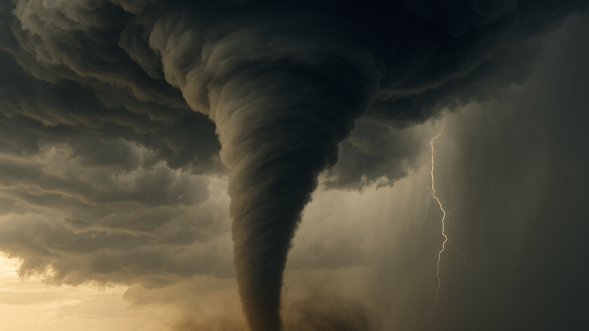

The Story
The birth of a tornado begins high in the atmosphere, long before the iconic funnel ever touches the earth. It requires a highly specific and volatile recipe: warm, moist air rising rapidly from the ground colliding with cold, dry air falling from above. When winds at different altitudes blow at different speeds and directions—a phenomenon known as wind shear—it creates an invisible, horizontal spinning tube of air in the lower atmosphere.
As a massive thunderstorm, known as a supercell, continues to grow, its powerful updrafts catch this horizontal spinning tube and pull it completely upright. This rotating core of the storm, called a mesocyclone, begins to tighten and stretch toward the ground. Like a figure skater pulling their arms in to spin faster, the tightening funnel accelerates to horrifying speeds. When this condensation funnel finally makes contact with the dirt, it officially becomes a tornado, packing winds that can exceed 300 miles per hour.
What makes a tornado so uniquely terrifying is its surgical precision. Unlike a hurricane that blankets entire states in destruction, a tornado is a localized weapon. It can completely erase a single house from its foundation while leaving a fragile glass window perfectly intact on the house next door. This highly concentrated vortex acts as a massive vacuum, equalizing atmospheric pressure through sheer, tearing violence before eventually suffocating itself and pulling back into the clouds.

Philosophical Questions
Is destruction a matter of scale or intent?
Because a tornado's path is so narrow and its destruction so absolute, the damage often feels intensely personal to those who survive it. It is hard not to look at one destroyed house next to an untouched one and wonder "Why them, and not me?"
Yet, meteorology tells us there is no "why." A tornado does not choose its path; it simply follows the path of least atmospheric resistance. This forces us to confront the uncomfortable reality that extreme tragedy and incredible luck can exist inches apart, entirely dictated by the blind physics of moving air.
Why are we drawn to the things that can destroy us?
There is a reason thousands of storm chasers drive toward tornadoes while everyone else drives away. Beyond the danger, a tornado is undeniably, hypnotically beautiful. It is a visible manifestation of the invisible forces that govern our world.
This reveals a strange contradiction in human nature. We spend our lives seeking safety, yet we are profoundly fascinated by the sublime—the terrifying, overwhelming power of nature that reminds us of how small we truly are. It suggests that a part of us actually craves the reminder that we are not in control.
What does the sky owe us?
We build our lives under the assumption that the atmosphere will remain passive—a quiet backdrop of blue skies and gentle breezes. A tornado shatters this contract, proving that the sky is a heavy, active, and volatile ocean of gas.
A tornado asks us to abandon our human-centric view of the world. The atmosphere is not here to shelter us; it is here to balance the Earth's thermal energy. Accepting this means recognizing that we are simply guests living at the bottom of a chaotic ocean of air, entirely at the mercy of its currents.